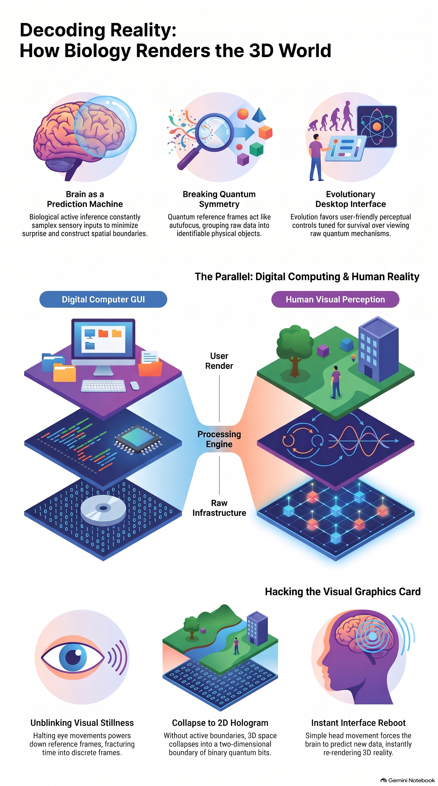
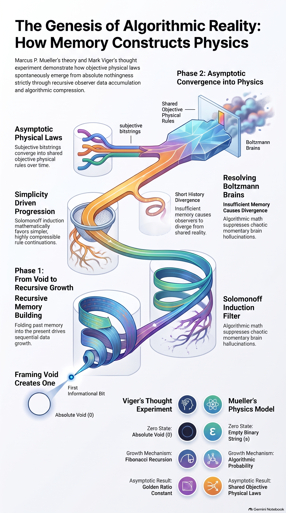

Peeling Back the 3D Interface – Perception and the Holographic Screen
PDF-Slides zum Podcast – im Browser anzeigen
Infografik anzeigen: „Decoding Reality“

Private Lese- und Hörproben.
Hier trifft mein persönliches Erleben auf die aktuelle Forschung: Meine eigenen Erlebnisse und Beobachtungen stehen neben dem holografischen Prinzip nach Fields, Glazebrook & Marciano – und der Frage, was ein Beobachter von einem holografischen Bildschirm abliest. Zwei Ebenen, dieselbe Realität.

Meine Erlebnisse der aktuellen Forschung gegenübergestellt: Markus Müllers „Law without law“ beschreibt, wie Beobachterzustände Physik erst erzeugen – genau dort, wo subjektives Erleben und algorithmische Informationstheorie sich berühren, liegt dieser persönliche Bericht.
